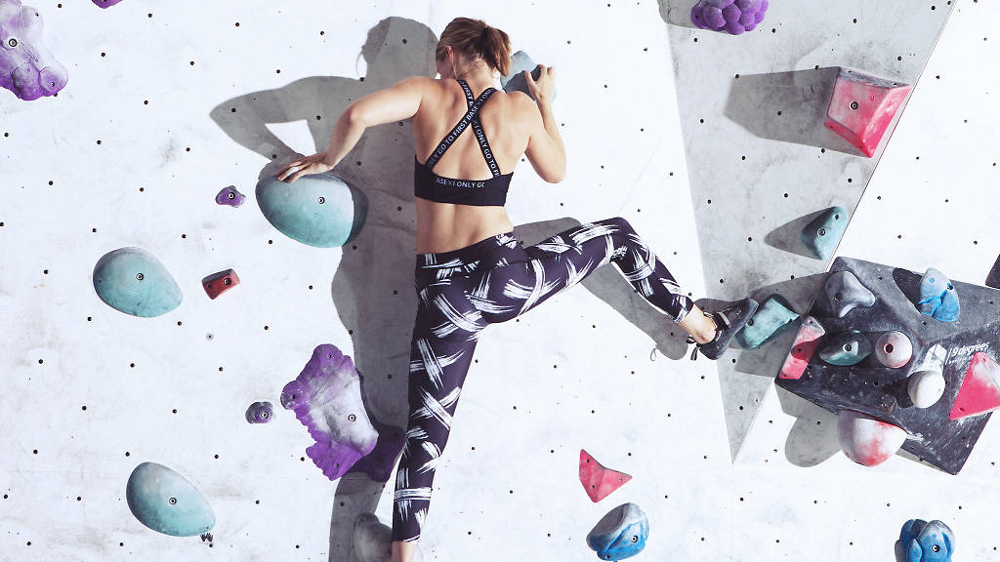

ARTICLE FEATURE Bouldering is a form of free climbing that is performed on small rock formations or artificial rock walls without the use of ropes or harnesses. While bouldering can be done without any equipment, most climbers use climbing shoes to help secure footholds, chalk to keep their hands dry and to provide a firmer grip, and bouldering mats to prevent injuries from falls.
HERO FEATURE Bouldering is rock climbing without the ropes, heights, and hassle. It's physical problem solving.
HERO CALL TO ACTION It's a highly social form of climbing that is easy to learn and enjoy. Train your muscles without the pain and get fit without the repetition!


ARTICLE LISTING
The sport was originally a method of training for roped climbs and mountaineering, so climbers could practice specific moves at a safe distance from the ground. Additionally, the sport served to build stamina and increase finger strength. Throughout the 20th century, bouldering evolved into a separate discipline.
Every climb, or "problem", has its own solution, and to successfully climb it you need to work it out. Depending on your body shape and personal strengths, your solution could be different to the next person's.
Box 1
Box 2
Box 3
Box 4
Box 5